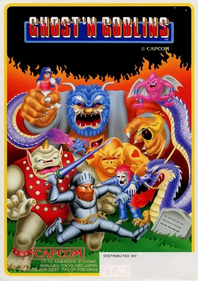

FBA (FinalBurn Alpha)
Ghosts'n Goblins
- Año: 1985
- Desarrollador: Capcom
- Género: Plataformas / Beat 'em up con desplazamiento
- Jugadores: 2 jugadores
Ghosts'n Goblins (Fantasmas y Duendes) es un videojuego de plataformas de arcade creado por Capcom.
Ghosts'n Goblins es un juego de plataformas donde el jugador controla a un caballero, llamado Sir Arthur, que tiene la habilidad de arrojar lanzas, dagas, antorchas, hachas y otras armas con las que debe derrotar a zombis, demonios y otras criaturas fantasmagóricas para poder rescatar a una princesa. Cada vez que un monstruo toca su armadura ésta se rompe, quedando el personaje "en calzoncillos" y expuesto a cualquier ataque. A lo largo del camino, el jugador puede coger nuevas armas, bonus y trajes extra de armadura que pueden ayudar en esta tarea. Sir Arthur aparece también en el juego "Marvel vs. Capcom" como partner. El juego a menudo es considerado muy difícil para los estándares de los arcade y es comúnmente considerado como uno de los juegos más difíciles lanzados para Nintendo (NES).
El juego tiene un modo de dos jugadores, pero éste consiste simplemente en alternar entre cada jugador.
La cabina del juego permite al jugador controlar a su personaje a través de un joystick 8 de ocho sentidos y dos botones - un botón para lanzar su arma y el otro para saltar.
El jugador empieza con 3 vidas del personaje (la del personaje en juego y dos más), y además existe otra vida extra cuando el jugador alcanza 20,000 y 70,000 puntos después de eso. Sin embargo, esta configuración podía cambiarse usando los interruptores DIP. Dos golpes de un ataque enemigo resultan en la pérdida de una vida. Después del primer golpe, Sir Arthur pierde su armadura. Un segundo golpe lo transforma irremediablemente en un esqueleto y pierde, de esa manera, una vida. Al principio de cada nivel, Sir Arthur está envuelto en una armadura completa, independientemente de si está con ella o no al finalizar cada nivel. En ciertos puntos del juego, Sir Arthur puede sufrir una muerte instantánea ya sea que esté con su armadura o no.
Si el jugador pierde una vida, se le devuelve al inicio del nivel, o a la mitad del mismo si se ha llegado hasta ese punto del escenario. Además, hay un límite de tiempo para acabar el nivel(generalmente alrededor de tres minutos). Si éste se acaba, el jugador pierde una vida y tiene que volver a empezar. El reloj se reinicia al principio de cada nivel.
Controles
Dos botones.
| Panel | Juego |
|---|---|
 | Disparar |
 | Saltar |
 | Moneda |
  | Empezar |
+  | Salir del juego |
El panel en FBA (FinalBurn Alpha)

Longplay

Partida completa de la recreativa (37 min), de AL82 Retrogaming Longplays: Ghosts 'n Goblins Longplay (Arcade) [60 FPS].